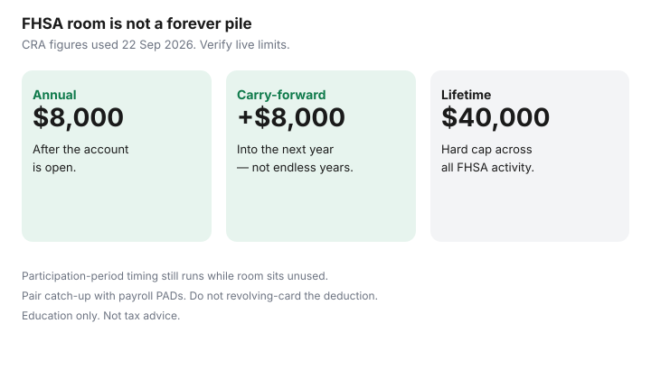

Personal Finance · Canada
FHSA Carry-Forward Rules in Canada: Stop Leaving Deductible Room on the Table
The First Home Savings Account gives eligible first-time home buyers deductible contribution room: $8,000 per year once the account is open, $40,000 lifetime, with unused annual room able to carry forward by up to $8,000 into the next year (so a year can see up to $16,000 if you stack current and carried amounts — still subject to the lifetime ceiling). Households open the account, contribute unevenly, and then discover carry-forward is not a TFSA-style forever pile.
This guide covers annual versus lifetime limits, how unused room carries, participation-period timing risk, cashflow pairing, and when TFSA flexibility still wins. Education only. CRA FHSA pages were used 22 Sep 2026.
Disclosure: Brokerage FHSA and banking offers are offer types only. Saving Optimizer may later add partner links. We do not currently claim issuer partnerships. This is education, not tax advice. Verify live CRA FHSA limits and your participation timeline before large contributions.
Key takeaways
- FHSA room: $8,000 per year after opening, $40,000 lifetime (CRA figures used 22 Sep 2026).
- Unused annual room generally carries forward by up to $8,000 — not an unlimited multi-year stack.
- Participation-period timing can end the design; idle years cost calendar as well as deductions.
- Pair catch-up room with payroll PADs; do not borrow on a 21% card to “max” deductible room.
- TFSA may still win when the home is uncertain or eligibility fails.
Annual vs lifetime FHSA limits (verify at draft)
After you open a qualifying FHSA, CRA materials describe annual contribution room of $8,000 for that year (subject to eligibility and the lifetime cap). Lifetime contributions cannot exceed $40,000. Opening starts the clock; waiting “until we have $8,000 sitting there” delays both room and the participation period. Automation mechanics live in automate FHSA contributions.
Verify live CRA figures before you contribute large amounts. This article’s numbers match Saving Optimizer’s FHSA guides drafted against CRA pages used 22 Sep 2026. If Ottawa updates a limit after that stamp, trust CRA My Account and the Notice materials over a static paragraph.

How unused room carries forward
Unused FHSA room generally carries forward by a maximum of $8,000 to the following year. It does not accumulate forever the way unused TFSA room can. If you open in Year 1, contribute $0, Year 2 can allow up to $16,000 ($8,000 current + $8,000 carried), not $24,000 of stacked neglect. Contribute nothing for several years and you do not bank a giant deductible pile — you mostly burn calendar time on the participation clock.
| Year | Contributed | Approx. room next year (education sketch) |
|---|---|---|
| 1 (account open) | $0 of $8,000 | Up to $16,000 available in Year 2 ($8,000 + $8,000 carry). |
| 2 | $4,000 of $16,000 | Carry is limited; you do not automatically park the entire leftover forever. |
| Later years | Varies | Always stop at $40,000 lifetime. Track issuer slips and My Account. |
Participation period timing risks
FHSA participation is time-limited (commonly discussed as the earlier of timelines tied to opening and a maximum participation window measured in years — confirm the exact CRA trigger dates for your account). Qualifying withdrawals for a first home also close the design. Treating the FHSA like an endless TFSA is how people hit the end of the participation period with unused lifetime room and a decision to transfer to an RRSP via the forms the CRA describes (including RC721-style movement discussed on our automation guide).
If the home purchase moved out five years, reopen the plan with a calendar: annual contributions, carry-forward use, and a written “buy / not buy” date. Do not discover the clock in December of the final year.
Pairing carry-forward with cashflow
When Year 2 shows up to $16,000 of room, you do not have to fund it in January. Split it across paydays. Example: $16,000 over 12 months is about $1,333 a month — only if the sheet still clears the mortgage, buffer, and any 19%+ debt. If cashflow only supports $400 a month, contribute $400 and accept that some deductible room may go unused. Unused room is better than a card revolve created to “max the FHSA.”
Align PADs with payroll. Pause them if the HISA buffer drops below one month of must-pays.
TFSA vs FHSA when room stacks
FHSA wins when you qualify, the home is real, and the deduction plus tax-free qualifying withdrawal path beats TFSA flexibility — see FHSA vs TFSA for a first home. TFSA wins when the purchase is uncertain, you need same-year withdrawal flexibility, or FHSA eligibility fails. You can hold both; do not double-count the same dollar toward two mental down payments.
Home Buyers’ Plan RRSP withdrawals are a separate bridge. Stacking HBP and FHSA has coordination rules — do not assume both full amounts without reading CRA’s combination conditions.
A yearly FHSA room checklist
- Account open date and participation-period notes from the issuer.
- Lifetime contributed to date versus $40,000.
- This year’s annual room and any carry-forward shown in My Account / issuer records.
- Monthly PAD sized to cashflow after buffer and high-interest debt.
- Deduction claim plan for the return (and whether you carry a deduction forward intentionally).
- Written home timeline: still first-home eligible? Qualifying withdrawal conditions reviewed?
- If plans change: RC721-style transfer awareness before the participation window ends.
Sources & date stamps
- CRA, First Home Savings Account (FHSA) — annual $8,000, lifetime $40,000, carry-forward up to $8,000, participation and qualifying withdrawal framing (used 22 Sep 2026).
- Saving Optimizer — FHSA automation and FHSA vs TFSA for operational detail.
Frequently asked questions
Does unused FHSA room carry forever like a TFSA?
No. Carry-forward is limited — commonly up to $8,000 into the following year — and the participation period still runs. It is not an endless pile.
Can I contribute $24,000 after three empty years?
Do not assume that. Stacking neglect does not create three full annual rooms at once. Read CRA’s carry-forward limit and your My Account figure.
When does the participation clock start?
Generally when you open your first FHSA. Confirm exact CRA end triggers with your issuer documents and CRA’s FHSA guide.
Should I open before I have $8,000 saved?
Often yes if you are eligible and the home is the plan — opening starts room. Fund with PADs rather than waiting for a lump sum.
What if we no longer want a first home?
Review CRA transfer options such as movement to an RRSP on the forms your automation guide discusses. Do not leave the account unexamined until the window ends.